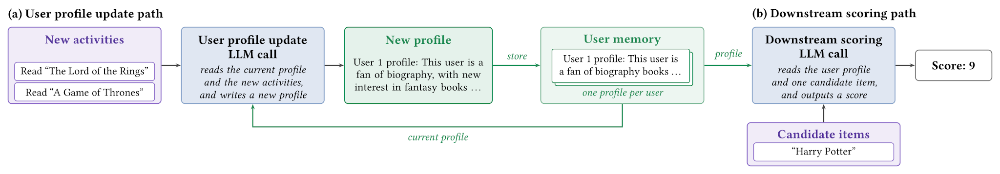
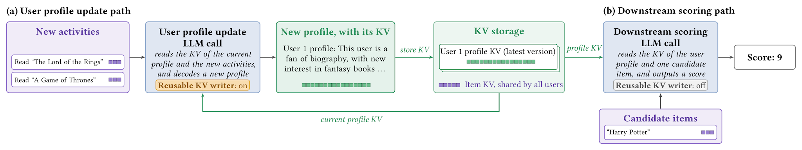

Contents · 5 sections
1Why prefix caching cannot reuse the same profile across different prefixes2Fixing positions alone drops ranking quality sharply3The update call writes reusable KV as it decodes the new profile4The next batch’s KV upload is hidden behind the current computation5No significant ranking gap versus full prefill; the throughput gain is mostly on scoringSHARE
The same user profile is spliced behind different prefixes, so prefix caching cannot reuse it across those prefixes: how KVUse stores it as reusable KV
A memory-augmented recommender keeps a natural-language profile for each user. An update path revises that profile when new engagements arrive. A scoring path reads the latest profile and scores how well candidate items match it. Both paths call a large language model (LLM).
The storage format creates the bottleneck. If the profile is stored as text, the scoring path has to splice it into the prompt and compute that profile’s key-value (KV) cache during prefill. The candidates in one user’s slate can share that prefill, but prefix caching cannot carry the KV from an update call into a scoring call, and a later visit still prefills the profile again. Scoring calls are typically long in the prompt, short in the decode, and more frequent than updates. Under saturated serving with full prefill, the paper measures that about 86% of a scoring call’s engine work is prefill, corresponding to about 513 input tokens and 9 output tokens, while about 61% of an update call’s engine work is decode. The main throughput limit is therefore the repeated prefill of the same profile text on the scoring path.
Prefix caching recovers little of that work. It can reuse a token’s KV only when the prompt up to that token is identical to one the engine has already computed. The text that precedes the same profile is not the same in an update call and in a scoring call.
Why prefix caching cannot reuse the same profile across different prefixes
The paper’s appendix gives a pair of real prompts. The update call starts with the system instruction “You are a user preference analyst. Write concise, coherent profiles.” The profile appears under “Current profile,” followed by new books under “New activity,” such as Justice for Speedy: A True Horse Story. The scoring call starts instead with “You are a recommendation engine. Score each item for this user.” The same profile now appears under “User Preferences,” followed by “Items to Score.” In the example, both profiles begin: “This user is drawn to a diverse range of topics, from self-help and personal development to historical non-fiction and fiction,” and mention You’re Not Crazy - It’s Your Mother.
Because the two system instructions differ, prefix caching cannot take the profile or item KV computed in an update call and reuse it in a scoring call. That does not mean the profile is recomputed on every call: under full prefill, the scoring prompts of one user's 10 candidates can still share the prefill of their common prefix, including the profile. Item descriptions appear in the new-activity section of the update prompt and in the items-to-score section of the scoring prompt, and each candidate has a different item row, so they are not shared within the slate the way the profile is.

Fixing positions alone drops ranking quality sharply
Splicing a stored KV chunk that is not a shared prefix introduces two errors. One is position. Rotary position embeddings (RoPE) rotate each key by the position at which that KV was produced. This error can be removed exactly: rotating a stored key further by the angle that corresponds to the shift from its original position to its new one removes the RoPE position error exactly. Values carry no positional encoding and are copied unchanged.
The other error is context. Each token in the profile already attended to the preceding context when its KV was written, and that context is baked into the cache. The context of an update call is “you are a preference analyst, revise the profile.” The context of a scoring call is “you are a recommendation engine, score the item against the profile.” The positions can be corrected while the preceding text has changed. Hoot says
The figure uses the two real system prefixes from the appendix, and shows two ways of splicing the same profile KV behind the scoring prompt: position re-rotation only, versus turning a writer on while the update decodes. The numbers are Amazon Books round 0 from the paper’s Table 3, not illustrative.
The same profile behind two prefixes → position-only reuse leaves write-time context in the KV and drops NDCG@10 from 0.6152 to 0.4564 → writer-produced KV reads at 0.5957
- Two prefixesThe same profile appears under Current profile in the update prompt and under User Preferences in the scoring prompt. Because the prefixes differ, prefix caching cannot carry the update-call KV into the scoring call.
- Position-only reuseNaive reuse only rotates keys by the position shift and copies values unchanged. The context seen at write time is still baked into that KV.
- Round 0 rankingOn Amazon Books in round 0, full-prefill NDCG@10 is 0.6152, and naive reuse falls to 0.4564.1 − 0.4564 / 0.6152 = 0.258, about 26% (paper Table 3)
- Writer-produced KVThe LoRA writer is on while the update path decodes the new profile, and off on the scoring path, which only reads the stored KV. In the same round, KVUse NDCG@10 is 0.5957, not significantly different from full prefill.

Source
Prompts from paper the paper's appendix update and scoring examples; NDCG@10 from Table 3, Amazon Books round 0, 160 held-out users.The paper calls the position-only baseline naive KV reuse: writers stay zero-initialized, and only the exact re-rotation is applied. On 160 held-out Amazon Books users, Normalized Discounted Cumulative Gain (NDCG) @10 over four memory rounds is 0.6152, 0.6128, 0.6306, and 0.6255 with full prefill, but 0.4564, 0.4491, 0.4658, and 0.4559 with naive reuse. The paper summarizes this as a 26%–27% drop in every round on Amazon Books and a 27%–32% drop on the other three datasets. Fixing positions is not enough; the KV has to be written so that it can later be read behind a different context.
The paper also offers, as motivation, an attention heatmap of a full-compute update call with no KV reuse. Attention is more concentrated inside the system-instruction, profile, and item-description chunks, and sparser across chunks. The authors read this as indicating that precomputed per-chunk KV might be reusable. That is a motivation, not a quality guarantee: naive reuse already shows that splicing the cache can hurt ranking substantially.

The update call writes reusable KV as it decodes the new profile
KVUse replaces the text user memory with a KV store that holds reusable KV for the latest profiles and for items. Both LLM calls read this KV instead of prefilling the corresponding text. The design is inspired by SemPIC, a prior method for writing reusable KV: writing and reading are separated. The backbone is a frozen Llama-3.1-8B-Instruct. Each reusable-KV writer is a Low-Rank Adaptation (LoRA) adapter on the query, key, value, and output projections of every layer, and it is switched on only while the model produces KV for its span type. The reader is the vanilla LLM with every LoRA adapter off, so the online scoring path does not change the backbone weights.
The system trains two writers, one for user profiles and one for item descriptions. Each item description is written on its own, starting at position zero, so that one item KV can be stored once and shared across users and prompts. At serving time, the update path turns the profile writer on while it decodes the new profile, producing the new profile text and its KV, and stores that profile KV. The scoring path keeps every writer off, reads the stored profile KV and candidate-item KV, and computes only the small suffix not covered by those caches. The system-instruction prefix can still use the native prefix cache of engines such as vLLM or SGLang. The paper notes that the profile text and KV produced with the writer on are expected to differ from a vanilla decode with the writer off, because the writers are optimized to limit degradation on downstream scoring, not to copy the vanilla wording token by token.
Training needs no human labels. The vanilla LLM first runs with full prefill to build a teacher chain: it writes an initial profile for each training user, revises it in three later updates, and scores 10 candidates in every round (one held-out engagement and nine random negatives; the slate stays fixed across rounds). The student path reproduces one complete sample: the current update, the scoring calls that read the profile KV this update writes, and the next update. The student matches the teacher’s next-token distributions under the same preceding tokens. Writers are trained separately for each dataset.

The next batch’s KV upload is hidden behind the current computation
Reusable KV lives in host memory and must be copied to the GPU before a call can read it. KVUse’s scheduler batches pending requests and uses a side stream to upload the next batch’s reusable KV while the GPU is still computing the current batch.
The paper describes this as completely hiding the upload latency behind GPU compute. The evidence that can be checked directly is a controlled comparison. If the stored KV is instead copied synchronously on the critical path of each engine step, the scoring-path speedup over full prefill on Amazon Books is only 3.40× (108.80 users per second). Hiding the upload behind the current batch raises that speedup to 3.96× (126.72 users per second). Across all four datasets, hiding the upload raises the scoring-path gain by a further 1.16×–1.20×. The two variants differ little on the update path, because uploading the KV takes little time compared with decoding the profile.
No significant ranking gap versus full prefill; the throughput gain is mostly on scoring
The experiments use four InstructRec domains: Amazon Books, Goodreads, Amazon Movies & TV, and Yelp, and only interaction histories. Amazon Books is the main dataset; ranking quality is reported on 160 held-out users whose histories are long enough for four memory rounds. Both arms use the same model, the same AMD MI300X GPU, vLLM 0.26, and automatic prefix caching. Under full prefill, the scoring prompts of a user’s 10 candidates share the prefill of their common prefix, including the profile. KVUse instead loads the stored KV of the profile and of the item row, and computes only the remaining tokens.
Averaged over four rounds, full-prefill NDCG@10 is 0.621, 0.617, 0.659, and 0.665 on the four datasets; KVUse differs by +0.008, −0.001, +0.006, and +0.008. None of these differences is statistically significant, and no dataset shows a significant NDCG@10 difference in any single round. On Amazon Books, the per-round gaps lie between −0.0195 and +0.0246, all with p>0.10. The only shortfall is in round 0 (−0.0195, p=0.153). From round 1 on, the difference turns neutral or slightly positive and remains not significant. The paper reads this as evidence that errors do not accumulate along the memory chain. Naive reuse does not show the same pattern.
The wording of a profile written with the writer on may still differ from the full-prefill text. The paper compares the two profiles over 640 user-rounds with a Gemini-3-Flash judge: 79.8% are judged equivalent in their main preferences, and a further 14.5% differ only in a minor detail, together 94.4% (604 of 640). The remaining 5.6% are partial overlaps; none are judged mostly different or unrelated. These are LLM-judge verdicts, not human audits.
The throughput gain is mainly on the scoring path. Under saturated load on Amazon Books, scoring rises from 31.99 to 126.72 complete users per second (3.96×), and mean engine step time falls from 642 ms to 161 ms. On the other three datasets, the scoring speedup is 4.06×–4.49×. The update path also speeds up, but by less, because an update call still spends substantial time decoding the new profile: about 180 output tokens on average in Amazon Books round 0, where throughput rises from 54.9 to 88.4 requests per second (1.61×). Across the four datasets, update speedups range from 1.43× to 1.91× and fall from round to round, because the profile lengthens and decode grows to 237–306 output tokens by round 3.
| Dataset | Scoring: full prefill (users/s) | Scoring: KVUse (speedup) | Update speedup (rounds 0 / 1 / 2 / 3) |
|---|---|---|---|
| Amazon Books | 31.99 | 126.72 (3.96×) | 1.61× / 1.55× / 1.48× / 1.43× |
| Goodreads | 29.44 | 125.44 (4.26×) | 1.77× / 1.58× / 1.52× / 1.45× |
| Amazon Movies & TV | 31.18 | 126.72 (4.06×) | 1.60× / 1.57× / 1.53× / 1.48× |
| Yelp | 26.23 | 117.76 (4.49×) | 1.91× / 1.72× / 1.61× / 1.58× |
Numbers are from the paper’s Table 6. A scoring user counts as complete once all 10 candidates have been scored; the update path counts completed update requests. Speedups are KVUse over full prefill. Measurements are taken in a saturated mid-run window on one AMD MI300X, with the engine queue kept full.
Relative to full prefill, none of the NDCG@10 differences across four datasets and four update rounds is statistically significant. Naive reuse that only corrects positions drops sharply. Writers still need to be trained per dataset for now. Amazon Books writers applied unchanged to Amazon Movies & TV stay at the level of full prefill (+0.007 in NDCG@10), but fall by 0.022 on Goodreads and by 0.137 on Yelp.
How did this read for you?
Hoot made a note. Thanks for the feedback.
One tap, no sign-in; tap again to undo. Only anonymous counts are kept, never who you are.
Discussion
Add experiment details, reproduction notes or a different take. Requires a GitHub sign-in.
Loading the discussion…